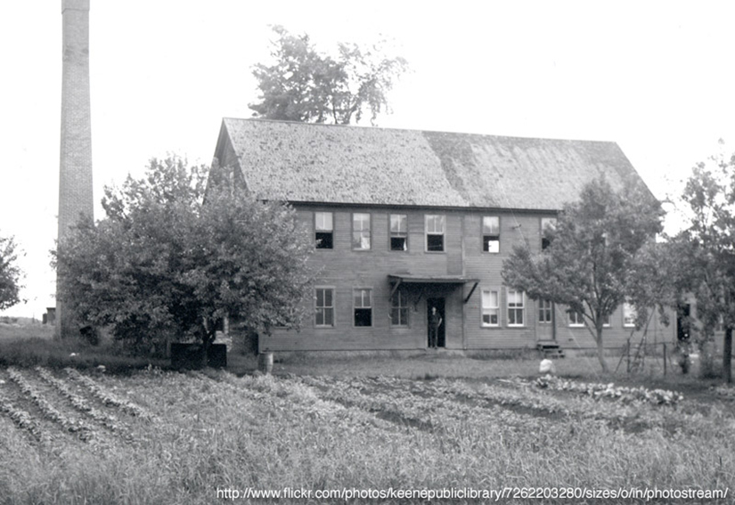
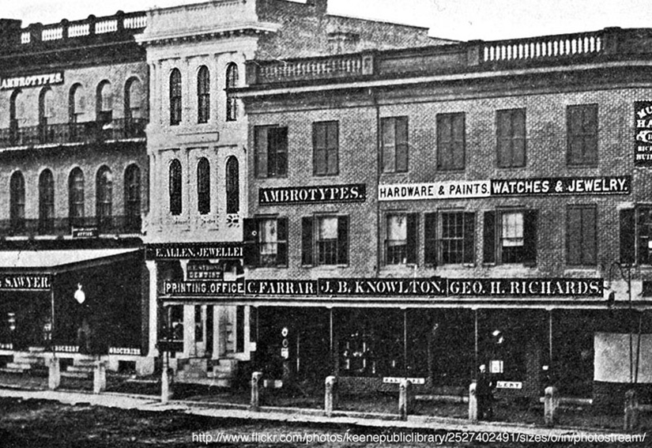
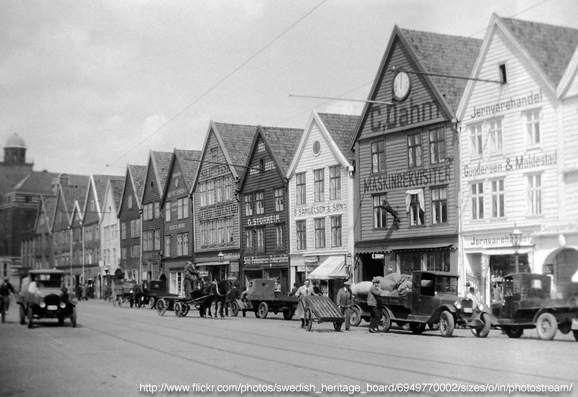
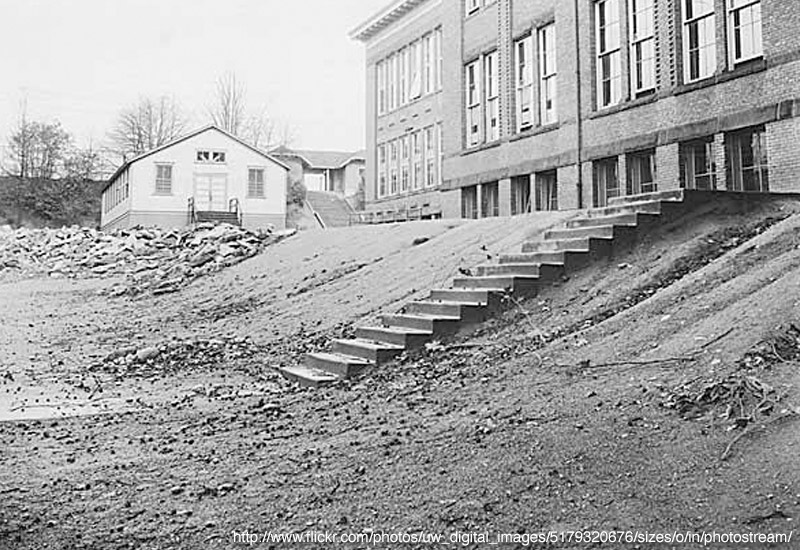

Foundation
Block Grid
Block grids give you a way to evenly split contents of a list within the grid. If you wanted to create a row of 5 images or paragraphs that need to stay evenly spaced no matter the screen size, the block grid is for you.
- 
- 

- 
Building With Predefined HTML Classes
Block grids are made from a ul.small-block-grid-# or ul.large-block-grid-#. These are ideal for blocked-in content generated by an application, as they do not require rows or even numbers of elements to display correctly.
These have a bit of flexibility since you have access to two separate grids between our built in 768px breakpoint. If you use the small-block-grid only, the grid will keep its spacing and configuration no matter the screen size. If you use large-block-grid only, the list items will stack on top of each other for small devices. If you use both of those classes combined, you can control the configuration and layout separately for each breakpoint.
<!-- Using only the small-block-grid -->
<ul class="small-block-grid-2">
<li><img src="../img/demos/demo1.png"></li>
<li><img src="../img/demos/demo2.png"></li>
<li><img src="../img/demos/demo3.png"></li>
<li><img src="../img/demos/demo4.png"></li>
</ul>
<!-- Using only the large-block-grid -->
<ul class="large-block-grid-4">
<li><img src="../img/demos/demo1.png"></li>
<li><img src="../img/demos/demo2.png"></li>
<li><img src="../img/demos/demo3.png"></li>
<li><img src="../img/demos/demo4.png"></li>
</ul>
<!-- Using both block grids together for different layouts -->
<ul class="small-block-grid-2 large-block-grid-4">
<li><img src="../img/demos/demo1.png"></li>
<li><img src="../img/demos/demo2.png"></li>
<li><img src="../img/demos/demo3.png"></li>
<li><img src="../img/demos/demo4.png"></li>
</ul>
For these styles to take effect, make sure you have the default Foundation CSS package or that you've selected block grid from a custom package. These should be linked up following our default HTML page structure.
Using The Mixin
We've included SCSS mixins used to style block-grids. To use the mixin, you'll need to have the extension installed or grab _variables.scss, _global.scss and _block-grid.scss from Github and throw them into a foundation folder in your project directory. From there, you can import the files at the top of your own SCSS stylesheet, like so:
@import "foundation/variables";
@import "foundation/components/global";
@import "foundation/components/block-grid";
If you are using the mixins, you may include the styles on whatever class or ID you'd like, just make sure you follow our markup structure. Since we don't have any media queries baked into the mixin itself, you can apply the styles at whatever breakpoint you want! Just change the configuration within each.
<ul class="your-class-name">
<li><img src="../img/demos/demo1.png"></li>
<li><img src="../img/demos/demo2.png"></li>
<li><img src="../img/demos/demo3.png"></li>
<li><img src="../img/demos/demo4.png"></li>
</ul>Quick Mixin
You can build your block-grid using our global mixin by including it on your custom class or ID in your own stylesheet. The mixin contains options configuring the block grid layout and margin on the fly. The global mixin looks like this:
/* Mixin and configurable options */
.your-class-name { @include block-grid($per-row, $spacing, $base-styles); }
/* This controls how many elements will be on each row of the block grid. */
/* Set this to whatever number you need, up to the max allowed in the variable */
$per-row: false
/* This controls how much space is between each item in the block grid */
$spacing: $block-grid-default-spacing
/* This controls whether or not base styles come through, set to false to leave out */
/* This is handy for when you create multiple block-grids and want less CSS output repetition */
$base-style: true
- 
Clearing Block Grid Rows
We have this built into the CSS, but you'll need to add a bit of code if you want your block grid to change layout between breakpoints. If you don't use this, it will inherit whatever you put in the smallest media query. This code looks for the n+1 of the grid so that it clears properly. That code looks like this:
.your-small-class-name > li { clear: none !important; }
Note: If you are using the same class across breakpoints, your mixin should override this and you won't need it. If you want to control the layout using different classes, use the above snippet.
Available SCSS Variables
/* We use this to control the maximum blocks and spacing */
$block-grid-elements: 12;
$block-grid-default-spacing: em-calc(20);
/* Enables media queries for block-grid classes. Set to false if writing semantic HTML. */
$block-grid-media-queries: true